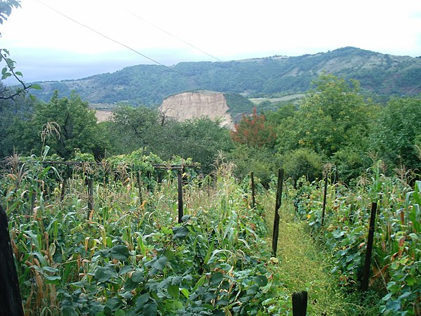

სოფლის მეურნეობა მხარის ერთ-ერთი მნიშვნელოვანი დარგია. მემცენარეობის პროდუქციიდან ძირითადია სიმინდი, ყურძენი და ბოსტნეული. კერძოდ, მწვანილი — ცერეცო, ქინძი, ოხრახუში, მწვანე ხახვი და წიწმატი მთელი სეზონის განმავლობაში, ასევე სანელებლების დამზადება. ნედლეულის ბაზა — წყალტუბოს რაიონი, სადაც შესაძლებელია მოწეულ იქნeს 3 ათასი ტონა ცერეცო, 500 ტ. ქინძი, 1500 ტ. ოხრახუში, 250 ტ. წიწაკა, ასევე ზაფრანი, კამა, და ქონდარი 20 ტონის ფარგლებში.[4] მიმდინარეობს მუშაობა სანელებლების დამამზადებელი მინისაწარმოს მშენებლობისათვის. ბაღჩეული — კიტრი, პომიდორი, სატაცური, ოსპი (წყალტუბოს, ვანის, ბაღდათის მუნიციპალიტეტები); ხილი — ვაშლი, მსხალი, ქლიავი, ტყემალი, ხურმა, შინდი (ვანის, თერჯოლის, სამტრედიის მუნიციპალიტეტები); თაფლი (ბაღდათი, ხარაგაული, წყალტუბო, თერჯოლა). მეჩაიეობის ძირითადი ზონებია: წყალტუბო, ტყიბული და ხონი.
1782 წელს, სოლომონ I-ის დროისთვის იმერეთის მოსახლეობა დაახლოებით 113 000 ადამიანს შეადგენდა. ეს რიცხვი დაეცა სოლომონ II-ის დროს. განსაკუთრებით დაზარალდა მოსახლეობა 1812 წელს შავი ჭირის ეპიდემიის დროს. 1817 წელს რუსეთის იმპერიის აღწერით ანგარიშობდნენ დაახლოებით 76 000 ადამიანს. ჟაკ ფრანსუა გამბას მიხედვით 1824 წელს იმერეთის მოსახლეობა 90 000 მოსახლე იყო და ამ რიცხვში შედიოდა რუსული ჯარის ნაწილებიც. გრაფი სერისტორის მიხედვით 1832 წლისთვის იმერეთში 125 000 ადამიანი ცხოვრობდა. დიუბუა დე მონპერეს ცნობით იმერეთის ოთხი მაზრის მოსახლეობა სულ 100 400 ადამიანი იყო.